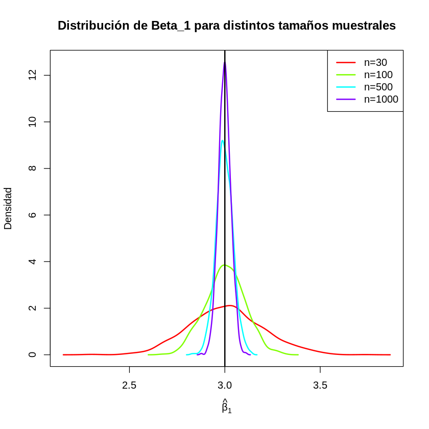

Clase 10 · Propiedades asintóticas
Contenido oficial de la semana
Esta página reproduce íntegras y en orden las diapositivas de la cátedra del viernes de la
semana 10 (sem10/clase11.tex, 17 láminas). Los bloques Interactivo, los casos y las preguntas
son material adicional para estudiar.
Cómo estudiar esta página
La clase está ordenada en 4 temas. Cada tema parte con una pregunta guía, sigue con las láminas y los simuladores, y termina con ✍️ preguntas de selección múltiple (cada alternativa incorrecta explica por qué no lo es) y un 🧪 ejercicio de R que puedes editar y ejecutar aquí mismo, sin instalar nada. Los 4 ejercicios de R en un solo archivo: 📥 clase10.R.
🎯 Objetivos de la sesión
- Distinguir propiedades de muestra finita (insesgamiento) de propiedades asintóticas (consistencia).
- Entender la consistencia de MCO y por qué basta la exogeneidad débil \(E(x'u) = 0\).
- Usar la normalidad asintótica para justificar tests e intervalos aunque \(u\) no sea normal.
- Conocer la eficiencia asintótica de MCO y qué cambia con heterocedasticidad.
🗓️ Agenda de la cátedra (viernes 18:40 – 21:25)
Haz clic en un tema para ir directo a él.
- 18:401Muestras grandes y los supuestos de la consistencialáminas 1–4 · ✍️ 2 preguntas · 🧪 R
- 19:052¿Qué es la consistencia?láminas 5–6 · ✍️ 2 preguntas · 🧪 R
- 19:253Normalidad asintótica y sus consecuenciasláminas 7–10 · ✍️ 2 preguntas · 🧪 R
- 19:55☕ Receso
- 20:054Eficiencia asintótica, resumen y aplicaciónláminas 11–17 · ✍️ 2 preguntas · 🧪 R
- 21:00🧪 Práctica guiada con R y cierre
Propiedades asintóticas
📄 Diapositivas: sem10/clase11.tex · 17 láminas
Muestras grandes y los supuestos de la consistencia
¿Qué le pasa a MCO cuando la muestra crece sin límite?
Introducción
Pregunta clave: ¿Cómo se comporta el estimador de MCO cuando el tamaño de la muestra crece indefinidamente?
-
El análisis asintótico nos permite estudiar el comportamiento del estimador en muestras grandes.
-
Es útil para justificar inferencias cuando la normalidad exacta de los errores no se cumple.
Muestras finitas vs. muestras grandes
-
Propiedades de muestras finitas: válidas para cualquier \(n\), como la insesgadez bajo Gauss-Markov.
-
Propiedades asintóticas: válidas cuando \(n \to \infty\).
-
Nos interesa estudiar el comportamiento de los estimadores cuando el tamaño de la muestra crece.
Supuestos para la consistencia de MCO
-
1) Linealidad en los parámetros.
-
2) Muestreo aleatorio.
-
3) No hay multicolinealidad perfecta.
-
4) Exogeneidad: \(E[u | x_1, x_2, x_3, ..., x_k] = 0\)
Estos supuestos son los mismos del insesgamiento.
No asumimos que la distribución de los u es normal.
Un supuesto 4': exogeneidad débil
-
Para la consistencia basta con
\[ E(x_i' u_i) = 0 \quad \text{(no correlación / exogeneidad débil)} \] -
Una manera de caracterizar el supuesto de media condicional cero, \(E(u|x_1, ..., x_k)=0\) es que ninguna función de las variables explicativas está correlacionada con u. El supuesto 4' sólo requiere que ninguna \(x_j\) esté correlacionada con u.
-
Consecuencia práctica: la omisión de variables relevantes correlacionadas con los regresores incluidos genera inconsistencia (no solo sesgo), y ese sesgo asintótico no desaparece al aumentar \(n\).
✍️ Practica · Tema 1
¿Qué supuesto es suficiente para la consistencia de MCO, según la lámina 4?
✅ Es la exogeneidad débil, más débil que E(u | x) = 0.
Si se omite una variable relevante correlacionada con x, al aumentar n…
✅ Lámina 4: la omisión genera inconsistencia.
🧪 Practica en R · El sesgo que no se va
Estima β₁ con una variable omitida para muestras cada vez más grandes.
# Con una variable omitida correlacionada con x, el sesgo NO desaparece al crecer n
set.seed(10)
sesgo <- function(n) {
x <- rnorm(n)
z <- 0.7 * x + rnorm(n) # omitida, correlacionada con x
y <- 1 + 2 * x + 1 * z + rnorm(n)
unname(coef(lm(y ~ x))[2]) # verdadero: 2
}
sapply(c(50, 500, 5000, 50000), sesgo) # se acerca a 2.7, no a 2
🎯 Reto: cambia 0.7 * x por 0 * x (la omitida ya no se correlaciona con x). ¿Hacia dónde converge ahora?
¿Qué es la consistencia?
¿Qué significa que un estimador se acerque al valor verdadero?
¿Qué es la consistencia?
Un estimador es consistente si:
al aumentar el tamaño de la muestra, el estimador se aproxima al valor verdadero del parámetro:
-
En términos probabilísticos: su distribución se concentra en torno al parámetro.
-
A medida que el tamaño de la muestra aumenta (\(n\rightarrow \infty\)), la probabilidad de que el estimador esté muy cerca del parámetro se aproxima a 1. Es decir, los valores del estimador se agrupan cada vez más cerca del valor del parámetro conforme n crece.
-
\(Prob(|\hat{\beta}_j^n-\beta_j|>\epsilon)\rightarrow 0\) cuando \(n\rightarrow \infty \quad \forall \epsilon\)
Se escribe usando la notación plim: \(\plim \hat{\beta}_j^n = \beta_j\)
Consistencia

✍️ Practica · Tema 2
plim β̂ⱼ = βⱼ significa que…
✅ Lámina 5.
¿Puede un estimador ser consistente pero sesgado en muestras pequeñas?
✅ Lámina 13, punto 1.
🧪 Practica en R · Consistencia por simulación
Como en la aplicación de la lámina 17: estima β₁ en 300 muestras para cada n y mira cómo se concentra la distribución.
# Como la aplicación en R de la lámina 17: β̂1 para muestras cada vez más grandes
set.seed(11)
ns <- c(10, 50, 200, 1000, 5000)
beta_hat <- sapply(ns, function(n) {
replicate(300, {
x <- rnorm(n)
u <- rexp(n) - 1 # error muy asimétrico, media 0
y <- 1 + 2 * x + u
coef(lm(y ~ x))[2]
})
})
colnames(beta_hat) <- ns
round(apply(beta_hat, 2, sd), 4) # la dispersión cae
round(colMeans(abs(beta_hat - 2) > 0.1), 3) # P(|β̂1 − 2| > 0.1) → 0
boxplot(beta_hat, xlab = "n", ylab = "beta1 estimado"); abline(h = 2, lty = 2)
🎯 Reto: cambia el error por rnorm(n) * 3. ¿Converge igual?
Normalidad asintótica y sus consecuencias
¿Podemos usar t y F si los errores no son normales?
Distribución normal asintótica
Una secuencia de variables aleatorias \(\{Z_n\}\) tiene una distribución normal estándar asintótica si para todo \(z\):
donde \(\Phi(\cdot)\) es la función de distribución acumulada normal estándar. Se escribe
- Base del Teorema Central del Límite (TCL): la suma (estandarizada) de v.a.i.i.d. converge a una normal, sin importar la distribución original.
Normalidad asintótica de MCO
Bajo los supuestos de Gauss-Markov (sin requerir normalidad de \(u\)):
En notación matricial:
Interpretación: para \(n\) suficientemente grande, \(\hat\beta\) se distribuye aproximadamente normal, aun si \(u\) no es normal.
Idea de la demostración (caso simple)
Se puede escribir:
-
Por LGN: \(s_x^2 \xrightarrow{p} \sigma_x^2 = \text{Var}(x)\)
-
\(\{(x_i-\mu)u_i\}\) es i.i.d., media 0, varianza \(\sigma^2\sigma_x^2\) (bajo homocedasticidad)
-
Por el TCL: \(n^{-1/2}\sum_i (x_i-\mu)u_i \;\dot\sim\; \text{Normal}(0,\sigma^2\sigma_x^2)\)
-
El término \((\mu-\bar x)\,n^{-1/2}\sum_i u_i \xrightarrow{p} 0\) (no afecta la distribución límite)
Consecuencias prácticas
-
Los estadísticos \(t\) y \(F\) tienen distribuciones asintóticamente \(t\) / \(\chi^2\), incluso sin normalidad de \(u\).
-
Justifica el uso de inferencia estándar (IC, valores-\(p\)) en muestras grandes, aun si los errores no son normales.
-
El Multiplicador de Lagrange (LM) y el estadístico de Wald se basan en estos mismos resultados de convergencia.
-
Con heterocedasticidad, se reemplaza \(\sigma^2 A^{-1}\) por una matriz de varianza-covarianza robusta:
\[ \widehat{\text{Avar}}(\hat\beta) = (X'X)^{-1}\left(\sum_i \hat u_i^2\, x_i'x_i\right)(X'X)^{-1} \]
✍️ Practica · Tema 3
¿Qué justifica usar tests t e intervalos con errores no normales?
✅ Láminas 8 y 10.
La normalidad asintótica de MCO proviene del…
✅ La LGN da la consistencia; el TCL, la normalidad asintótica (lámina 13).
🧪 Practica en R · La t con errores asimétricos
Con errores asimétricos, compara la tasa de rechazo de una H₀ verdadera con n = 10 y n = 500.
set.seed(12)
t_stats <- function(n) replicate(4000, {
x <- abs(rnorm(n))
y <- 1 + 2 * x + (rexp(n) - 1) * 2 # errores asimétricos
s <- coef(summary(lm(y ~ x)))
(s[2, 1] - 2) / s[2, 2]
})
t10 <- t_stats(10)
t500 <- t_stats(500)
c(rechazo_n10 = mean(abs(t10) > 1.96), rechazo_n500 = mean(abs(t500) > 1.96)) # meta: 0.05
hist(t500, breaks = 50, freq = FALSE, main = "t con n = 500")
curve(dnorm(x), add = TRUE, lwd = 3, col = "goldenrod")
🎯 Reto: prueba n = 30. ¿Se acerca al 5%?
Eficiencia asintótica, resumen y aplicación
Si varios estimadores son consistentes, ¿cuál conviene usar?
Eficiencia asintótica de MCO (Teorema 5.3)
-
Bajo los supuestos de Gauss-Markov más homocedasticidad, MCO no solo es MELI (Gauss-Markov) en muestra finita.
-
Es también asintóticamente eficiente entre una clase amplia de estimadores (no solo lineales) que son consistentes bajo los mismos supuestos.
-
Compara la matriz de varianza-covarianza asintótica de MCO con la de cualquier otro estimador consistente y asintóticamente normal: MCO tiene la menor varianza asintótica.
Resumen: muestra finita vs.\ asintótica
| Muestra finita | Asintótico | |
|---|---|---|
| Propiedad | Insesgamiento | Consistencia |
| Requiere normalidad | Sí (para \(t\), \(F\) exactas) | No |
| Supuesto clave | \(E(u\mid x) = 0\) | \(E(x'u) = 0\) |
| Herramienta | Álgebra exacta | LGN + TCL |
| Resultado | \(\hat\beta \sim \text{Normal exacta}\) | \(\sqrt{n}(\hat\beta-\beta) \dot\sim \text{Normal}\) |
Puntos clave para recordar
-
Consistencia \(\neq\) insesgamiento: son propiedades distintas.
-
La LGN da consistencia; el TCL da normalidad asintótica.
-
MCO es consistente bajo supuestos más débiles que los necesarios para el insesgamiento.
-
La normalidad asintótica no requiere que \(u\) sea normal --- solo tamaño de muestra grande.
-
Estos resultados justifican la inferencia estándar (t, F, IC) en la práctica aplicada.
Normalidad Asintótica
donde \(\Sigma = \sigma^2 (X'X)^{-1}\).
La convergencia en distribución se debe al Teorema Central del Límite.
Implicaciones:
-
Permite construir intervalos de confianza asintóticos.
-
Justifica la inferencia estadística en muestras grandes aun cuando no se cumpla la normalidad de los errores.
Eficiencia Asintótica
Definición: Un estimador es asintóticamente eficiente si minimiza la varianza dentro de la clase de estimadores consistentes y asintóticamente normales.
-
Bajo homocedasticidad, MCO es eficiente (Gauss-Markov).
-
Bajo heterocedasticidad, MCO sigue siendo consistente, pero no eficiente (no se soluciona con muestra grande).
Importancia práctica
-
En la práctica, siempre usamos muestras finitas.
-
La consistencia indica que con suficientes datos, podemos acercarnos al valor verdadero.
-
Granger (Nobel Economía 2003): "Si usted no puede obtener un resultado correcto a medida que \(n\) tiende a infinito, es mejor que se dedique a otra cosa."
✍️ Practica · Tema 4
Bajo heterocedasticidad, MCO…
✅ Lámina 15.
En la tabla de la lámina 12, ¿qué herramienta da la consistencia?
✅ Láminas 12 y 13: LGN + TCL.
🧪 Practica en R · MCO contra otro estimador consistente
Compara MCO con un estimador que divide la muestra en dos grupos: ambos son consistentes, pero ¿cuál varía menos?
# MCO tiene menor varianza que otro estimador consistente (eficiencia asintótica)
set.seed(13)
n <- 400
sim <- replicate(2000, {
x <- rnorm(n); y <- 1 + 2 * x + rnorm(n)
mco <- coef(lm(y ~ x))[2]
alto <- x > median(x) # estimador alternativo: compara dos grupos
grupos <- (mean(y[alto]) - mean(y[!alto])) / (mean(x[alto]) - mean(x[!alto]))
c(MCO = unname(mco), grupos = grupos)
})
rowMeans(sim) # ambos ≈ 2: los dos son consistentes
apply(sim, 1, var) # pero MCO tiene menor varianza
🎯 Reto: aumenta n a 4000. ¿Siguen ambos cerca de 2? ¿Se mantiene la diferencia de varianzas?
🧠 Ideas clave
- Insesgamiento es una propiedad de muestra finita; consistencia (\(\operatorname*{plim} \hat{\beta}_j = \beta_j\)) es asintótica: son distintas.
- MCO es consistente con supuestos más débiles: basta \(E(x'u) = 0\). Una variable omitida correlacionada con \(x\) produce inconsistencia.
- Por el TCL, \(\hat{\beta}\) es asintóticamente normal aunque \(u\) no lo sea: los tests \(t\) y \(F\) valen en muestras grandes.
- Con homocedasticidad, MCO es asintóticamente eficiente; con heterocedasticidad sigue siendo consistente, pero no eficiente.
✅ Autoevaluación
Un estimador tiene E(β̃) = β + 1/n. ¿Es insesgado? ¿Es consistente (si su varianza tiende a cero)?
✅ Consistencia ≠ insesgamiento (lámina 13).
¿Qué se necesita para usar el test t en una muestra de 5 000 observaciones con errores no normales?
✅ Láminas 8 y 10.
Duplicas el tamaño de una muestra en que hay una variable omitida correlacionada con x. El sesgo de β̂₁…
✅ Lámina 4.
📚 Para la próxima clase
- Wooldridge, capítulo 5 (análisis de regresión múltiple: MCO asintótico).
- Próxima clase: Variables binarias, test de Chow y modelo de probabilidad lineal.